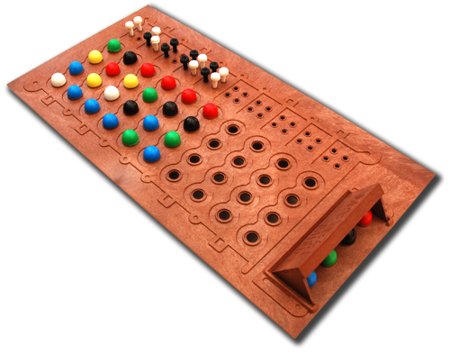
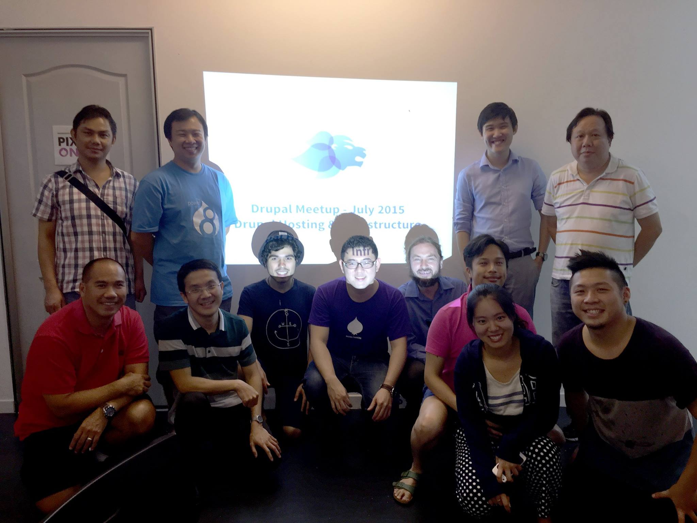
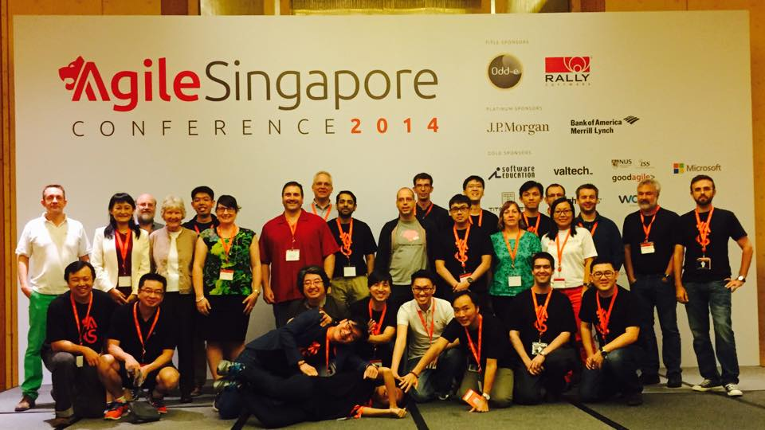
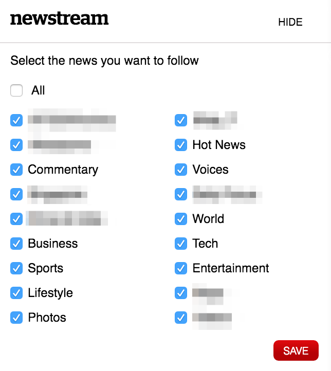
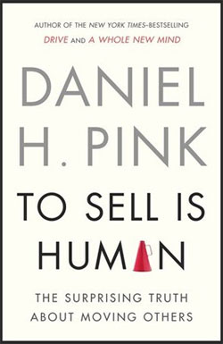

name: separator layout: true class: center, middle, separator background-image: url(images/bg_purple_diamond.jpg) --- name: normal-no-footer layout: true class: top, left, normal background-image: url(images/bright_squares.png) --- name: normal layout: true class: top, left, normal background-image: url(images/bright_squares.png) .footer.left[ ] .footer.right[ Ingredients for .bwe.light-purple[better web experiences] .link[[www.pixelonion.com](http://www.pixelonion.com)]] --- class: left, middle, title-page # How to become a better Drupal developer<br/>(with real life case studies) _DrupalCamp Manila 2016_<br/> _SJ_ ??? In this session, I will share my opinion on what makes an excellent Drupal developer. I design the session to be an interactive session. This means that not only me, but everyone here will explore what makes a good Drupal developer and how to be better in what you are doing. There will be case studies, reflecting on my experience, building, taking over and supporting some of Singapore largest Drupal sites. There will also be activities which we will all do together. Without further ado, let me start by introducing myself. --- # Introduction - SJ -- (Solihin Jinata) -- - Co-founder and Technical Director at Pixel Onion ??? Pixel Onion is an award winning Singapore based digital agency. We help medium and large organisations with digital strategy, user-centric design and web platform development. We have the ultimate goal of empowering our clients to take charge of their own site and eventually become more productive and profitable. We may be the only pure Drupal shop in Singapore. Our team is behind some of the larger Drupal sites in Singapore, including Singtel, SMU, TODAYonline. -- - Started coding when I was 12 ??? Started with LOGO, move to Basic. Built own mastermind game using basic. -- <div style="float: right; top: -50px; position: relative; "></div> -- - Started with Drupal 5 -- - Lucky husband and proud dad -- - Active in Singapore Drupal and Agile community -- <div>   </div> --- # Agenda 1. [Better Drupal developer](#developer) 2. [Observations and case studies](#observations) 3. [Summary](#summary) ??? Can everyone raise your right hand. High five with the people next to you and say "Good morning! Have an awesome DrupalCamp!" Can I get a show of hand how many people here: - how many are site builders? - how many are developers? - dev with d6 experience? - d7 experience? - d8 experience? - < 2 year? - 2–5 year? - > 5 year? --- name: developer template: separator # Better Drupal developer ### What do _good & better_ mean,<br/>and why should we care? --- # Drupal developer - Not playing with semantic ??? Developer, programmer, coder, they are all the same. -- - Drupal developer vs site builder ??? I would expect developer to know site building. But site builder not necessarily know coding. -- - PHP developer not necessarily Drupal developer ??? At least up to Drupal 7 --- # Good Drupal developer _Activity (1min): What makes good Drupal developer?_ ??? Break and ask for input -- Focus on: - security -- - maintainability -- - scalability -- - performance --- # Good Drupal developer? - work with laser precision on specific problem -- - can solve any problems handed over to them -- - can solve problems quickly -- Sometimes this leads to worse business situation when other factors are not considered. --- # Better Drupal developer -- - balance between good coding, UX, customer wants and technical debt (system and business) ??? Good developer can just focus on coding, but better developer will definitely take the business limitation into consideration. It doesn't help when developer can create the most awesome app while the business is bankrupt. Always need to strike balance and most of the times this comes in the form of technical debt. Good dev, since they only focus on coding, can't see bigger picture, usually piles up more technical debts, because they just want to satisfy the business user without questioning them. -- - effective communicator (people) ??? Since we need to balance, we also need to defend or sell our ideas to other people. We also need to empathise with other people. --- # Why we should care - inherent human nature to become better -- - provide real positive value to employers and clients -- - It's a Small (Drupal) World, After All ??? Really really small. Enzo, Webchick, Jeff, Vesa. One day a person works in Acquia, next day FFW. One day US based company next day Europe based company. -- - create positive externality within Drupal ecosystem ??? Tie back to Enzo's keynote. Pixel Onion is Drupal only agency in Singapore. Doesn't help when sites built on Drupal in Singapore are built badly. --- name: observations template: separator # Observations and case studies ### Common errors and how to be better? --- # Scope of discussion - Focus on code, system and people. -- - There are thousands of excellent online resources on coding.<br/> Past presentations: http://goo.gl/YZZqM, http://goo.gl/HPfPCz.<br/> Subscribe to: Weekly Drop and Drupal Newslettter. -- - The next list is not meant to be comprehensive. -- - Sometimes there are no right or wrong. ??? Only what works for the project and the client. There is article written by Greg Dunlap, a dev in lullabot sometime back. -- - Observations were made in D6 and D7. --- # Code: security ``` drupal_set_message(t('An article date has been fixed. NID:' . $entity->entity_id), 'error'); ``` ``` /** * Implements hook_menu(). */ function _menu() { $items = array(); $items['sku/%'] = array( 'page callback' => 'mymodule_get_nid_from_sku', 'page argument' => array(1), ); return $items; } function mymodule_get_nid_from_sku($sku) { $nid = db_query("SELECT nid FROM uc_products WHERE model = '$sku'"); $result = $nid->fetchAssoc(); return $result; } ``` - Drupal secure coding: https://www.drupal.org/writing-secure-code. ??? Cross site scripting. SQL injection. --- # Code: security _Activity (2min): event registration function._<br/> _Existing site with user entity, there are first name field and last name field._<br/> _Create event registration function with one autopopulated field: full name._ _Questions:_<br/> _What modules do you use?_<br/> _What API do you use?_<br/> _What custom code do you do?_ -- <br/> - Reduce custom function by implementing alternative workflow in the Drupal way. ??? I would first ask why? Can we still keep these as 2 fields? Then consider either webform or node create form. I probably won't use form API. I may use hook_form_alter or look for autopopulate module. --- # Code: maintainability - Drupal coding standard: https://www.drupal.org/coding-standards. --- # Code: maintainability ``` // generate list private function generateUl($array_to_convert, $html = TRUE, $indentation = 6) { ... ``` -- ``` /** * Generates an unordered list or flattened text version of a nested array. * * @param array $array * Input array. * @param bool $html * TRUE if the result should be rendered as HTML. * @param int $indentation * The number of spaces; defaults to 6. * * @return string * Formatted result. */ private function generateUl($array_to_convert, $html = TRUE, $indentation = 6) { ... ``` -- - Commenting and documentation. ??? If use sublime text, can use dockblockr extension Write readme or document somewhere, no need to be detailed, but cover as many as possible Consider writing technical note covering architecture rather than user guide --- # Code: maintainability .contain[ ] -- - Do not hack modules, or when you change contrib modules, do provide patches instead. --- # Code: maintainability ``` private function convert($a, $b = TRUE, $c = 6) { ``` ``` private function generateUl($array_to_convert, $html = TRUE, $indentation = 6) { ``` -- - Verbose and descriptive variable and function naming --- # Code: maintainability .left-pane.contain[ ] -- .right-pane[ - Master your git - Clear commit messages Describe the changes, include keywords, make it self explanatory - Understand branching models - Understand difference between revert and reset] --- # Code: maintainability .contain[ ] --- # Code: maintainability Git branching models - NVIE gitflow: http://nvie.com/posts/a-successful-git-branching-model/. - GitHub flow: https://guides.github.com/introduction/flow/. - Branch Per Feature: http://dymitruk.com/blog/2012/02/05/branch-per-feature/. - Acquia BPF: https://dev.acquia.com/blog/pragmatic-guide-branch-feature-git-branching-strategy. - Your own? ??? The idea here is that the git branching models must match the development teams and the organisation. Once you have it, please stick to it. --- # Code: maintainability - Master configuration management - D7: Feature per component vs feature per bundle --- # Code: scalability _Activity (5min): membership site with workshop registration function._<br/> - _Members have 10 different fields to fill in during registration._<br/> - _Admin can create workshops with description._<br/> - _Admin can create sessions under a workshop._<br/> - _Members can register for a workshop._<br/> - _Members and admin will be emailed for confirmed workshop._<br/> _Questions:_ - _What are the entities / bundles?_ - _What are the contrib modules?_ - _What functions are the custom modules used for?_ --- # Code: scalability - Wisely use contrib modules ??? User entity. Node entities: workshop, session, registration. May consider one of the registration module. Otherwise can use entity reference, views and rules only to build everything. -- - Embrace and respect Drupal as framework (APIs & hooks) ??? Use hook properly --- # Code: scalability .contain[  ] -- - Convert repetitive code into function, class, module ??? Involves code and even views --- # Code: performance .left-pane.contain[ ] .right-pane[ http://goo.gl/YZZqM] --- # System and business - Improve authoring experience ??? Use fieldgroup, field description to improve authoring experience --  ??? This is personalisation feature, which is a questionable UX: is it even necessary, do people use it? And worse, it was done in questionable manner, when the url called through ajax request can't be cached. -- - Always question the need of features ??? Become T shaped or even E shaped (experience, expertise, exploration [curiosity], execution) Learn other skills, most relevant is UX -- - Also consider the big picture ??? Another example is when business user requires function A. The dev gives function A with the effect of the site slows down greatly, because more slow queries are generated. --- # People <div style="float: right; margin-left: 50px; position: relative; "></div> - Everyone is a salesman. ??? "To sell is human" by Daniel Pink. You need to sell your idea to other people. You need to make sure that other people buy your idea. -- - Build trust and long lasting relationships with people. ??? By being genuine and having integrity. In the resume, or when pitching for project. --- # People _Activity (2min): communicating estimates._<br/> _You have features which you have estimated to take 2 months, give and take 2 weeks, to build._<br/> _This is a bit longer than the time the client / management expects._<br/> _Your job is to explain to the client / management so that they understand the project would take certain period._<br/> _I am the client / management._ ??? Let's do an activity. Need 2 volunteers. -- - Cope with time pressure, management pressure. --- # Other things? - drush / console / terminus, etc - TDD / BDD - active in community - right project management approach: Agile & Scrum --- name: summary # Summary - Good developers focus on code. - Better developers also focus on system and people. - Start asking _why_ certain features are requested. - System and people are equally important. - It all ties back into community and ecosystem. --- template: separator # That's all folks ### Feedback and questions --- template: separator # How to reach me sj at pixelonion.com<br/> www.drupal.org/u/loziju<br/> Drupal Philippine FB<br/> Drupal Singapore FB<br/> Made with [remark.js](http://remarkjs.com/)